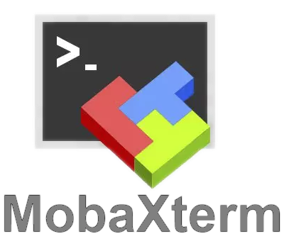

Leandro Pifano Herrera
Buenos Aires, Argentina
Montevideo, Uruguay
Zona: La Blanqueada
22 de Diciembre de 1992 (30 años)
SolteroContrato a prueba
CI - Cedula de Identidad
DNI - Documento Nacional de Identidad
Pasaporte
91667792
24810034
leandropifano@gmail.com
Profesional con cerca de 10 años de experiencia en en el área de las TICs y del IoTs en general.
Apasionado por la tecnología, la información, las comunicaciones y las sinergias que se generan con el mundo en que se apliquen.
Abanderado de la filosofía del Software Libre y su sentido de comunidad.
Año de Egreso: 2004
Duración: 6 años
Año de Egreso: 2007
Duración: 3 años
Año de Egreso: 2010
Duración: 3 años
Año de Egreso: 2012
Duración: 2 años
Año de Egreso: 2007
Duración: 3 años
Técnico TI Particular
2009 actualidadDiseñador y Desarrollador Web
2015 actualidadAdministrador de Servidores
Mayo 2012 Junio 2012Desempeñando funciones en Ministerio de Vivienda, Ordenamiento Territorial y Medio Ambiente (MVOTMA).
Tipo de Contrato: Suplencia (45 días).
Tareas desarrolladas: Administración de servidores Ms Windows y Linux, manejo de respaldos y mantenimiento de los servicios en funcionamiento.
Ayudante Técnico
Junio 2013 Junio 2015Tecnico TI - Administrador de Infraestructura - Server Admin - Web Admin
Junio 2015 Setiembre 2019Visual Basic .Net (VB.NET)
ASP
C - C++
Python
PHP
Javascript (+ES6)
TypeScript
Modelo Vista Controlador
POO SPA RESTful
Estudiando - Incorporando
NodeJS
 Angular
React.js
Angular
React.js
| Microsoft Windows |
|---|
| Xp Vista |
|
|
Linux Desktop | ||
|---|---|---|---|
Linux Mint |
Ubuntu | Debian | Fedora |
|
|
Linux Server | ||
|---|---|---|---|
| Ubuntu | Debian | Red Hat |
CentOS |
| Mac OS |
|---|
| 10.14 (Mojave) ~ 12.2.1 (Monterey) |
|  | |||||
Ingeniería del Caos 12 Factor Apps
Ethical Hacking
HTML - HTML5 |
CSS - CSS3 |
Wordpress |
Bootstrap |
jQuery |
Figma |
Gimp |
Fireworks |
Photoshop |
Illustrator |
Estudiando - Incorporando
SASS / SCSS
Angular Material
Material UI
Analista de Datos - DBATraineeJunior
SQL / JSON / scripting |
IdiomasInglés (Nivel Básico - Oral y Escrito) Portugués (Nivel Intermedio - Oral y Escrito) |